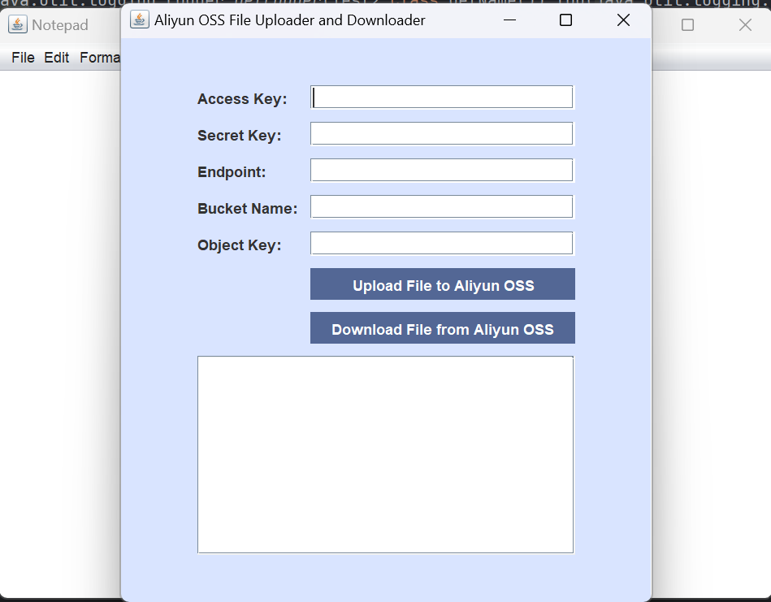

云存储接入
其主要流程如下：
集成云存储 SDK，添加依赖： 选择一个云存储服务提供商，将云存储 SDK 以依赖的形式添加到项目中。本项目选择的是阿里云OSS。
<dependency> <groupId>com.aliyun.oss</groupId> <artifactId>aliyun-sdk-oss</artifactId> <version>3.17.2</version> </dependency>编写代码连接到云存储服务： 使用 SDK 提供的 API，编写代码连接到云存储服务，并实现文件的上传、下载等操作。
// upload PutObjectRequest putObjectRequest = new PutObjectRequest(bucketName, objectKey, file); ossClient.putObject(putObjectRequest); // download GetObjectRequest getObjectRequest = new GetObjectRequest(bucketName, objectKey); OSSObject ossObject = ossClient.getObject(getObjectRequest); // set local path String localFilePath = saveDirectory.getAbsolutePath() + File.separator + objectKey; // save file ossClient.getObject(new GetObjectRequest(bucketName, objectKey), new File(localFilePath));接收用户的阿里云账户信息：这里选择新建一个面板接受输入。然后接入云平台，运行上传与下载操作。面板下还可以建一个日志记录框。
accessKeyField = createTextField("Access Key:"); secretKeyField = createPasswordField("Secret Key:"); endpointField = createTextField("Endpoint:"); bucketNameField = createTextField("Bucket Name:"); objectKeyField = createTextField("Object Key:"); // connect to Aliyun OSS and upload String uploadResult = uploadFileToAliyunOSS(accessKey, secretKey, endpoint, bucketName, objectKey, selectedFile);
最终结果如下：
账户信息输入界面： 